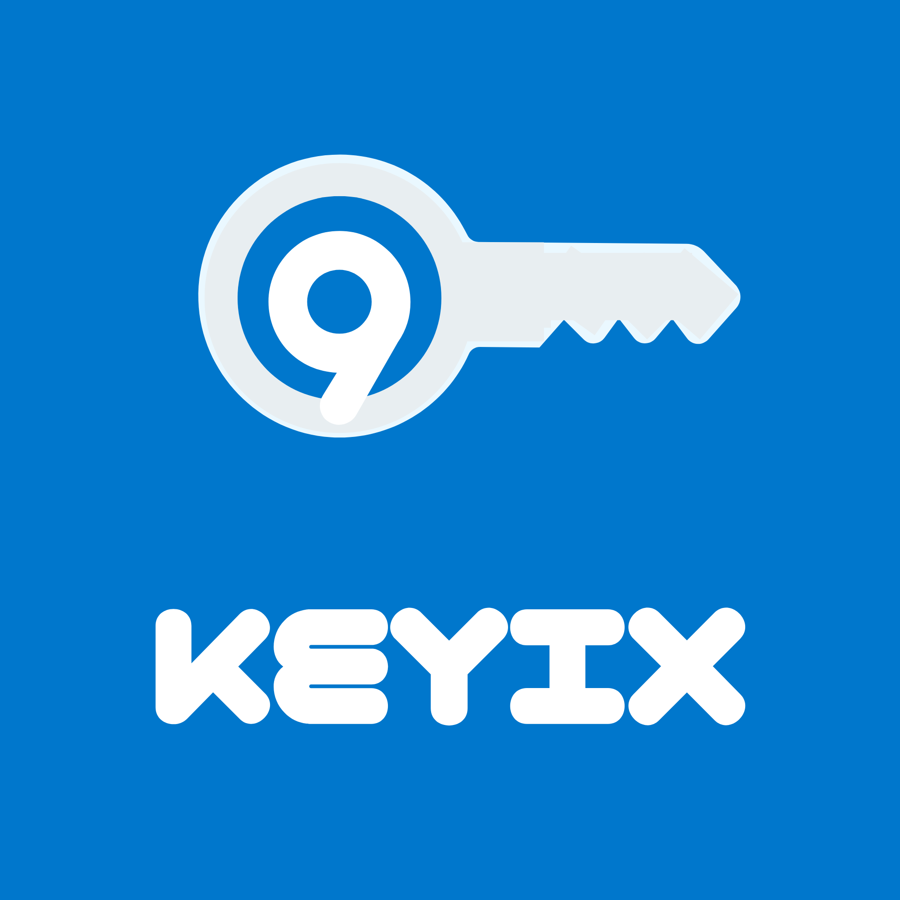

Protezione reale
Livelli di sicurezza pensati per account diversi, da quelli personali a quelli più sensibili.

Privacy-first security
Ogni proposta è pensata per essere unica, memorabile e adatta a un contesto reale, senza compromettere la sicurezza o la semplicità d’uso.

Livelli di sicurezza pensati per account diversi, da quelli personali a quelli più sensibili.
Interfaccia semplice, pulita e orientata all’uso quotidiano senza appesantire il flusso.
Struttura visiva curata, contenuti ordinati e attenzione ai dettagli per un’esperienza più solida.


| Livello | Verbo | Aggettivo | Numeri | Simboli | Entropia (bits) | Sicurezza (%) | Tempo stimato hacker |
|---|---|---|---|---|---|---|---|
| Base | No | No | 1 | 1 | 28 | 1% | ~10 giorni |
| Medio | Sì | No | 2 | 1 | 45 | 25% | ~2 anni |
| Avanzato | Sì | Sì | 2 | 2 | 60 | 70% | ~123 anni |
| Ultra | Sì | Sì | 3 | 2 | 72 | 99% | ~123456 anni |
| v.4 | Sì | Sì | 4 | 2 | 80 | 99.9% | ~1 milione di anni |


Blog